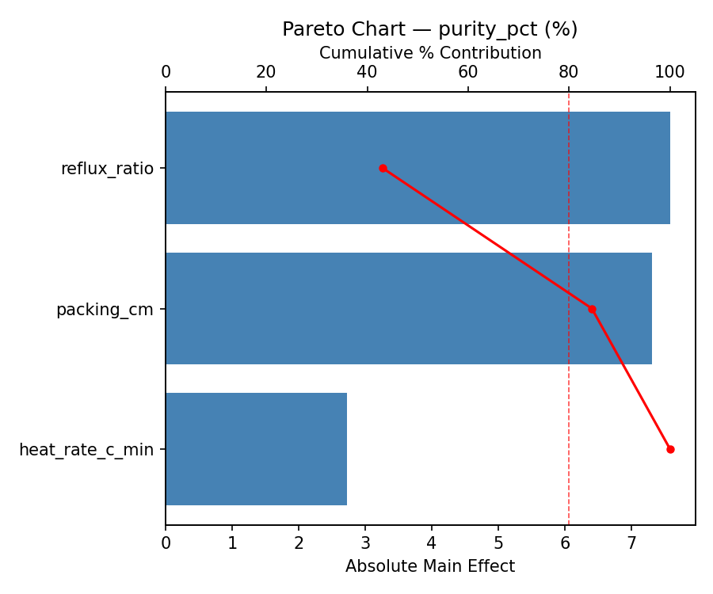
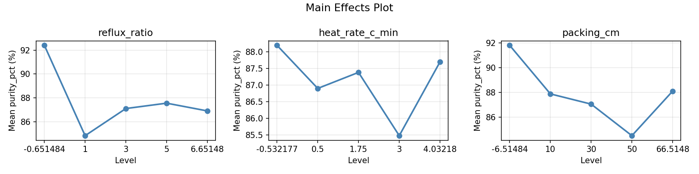
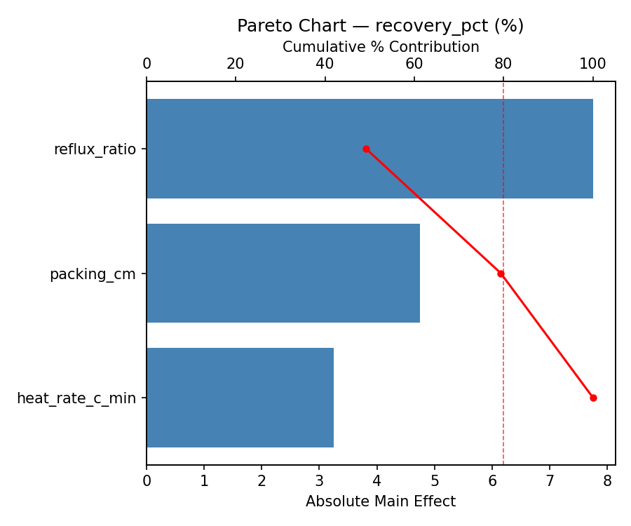
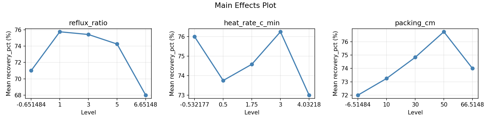
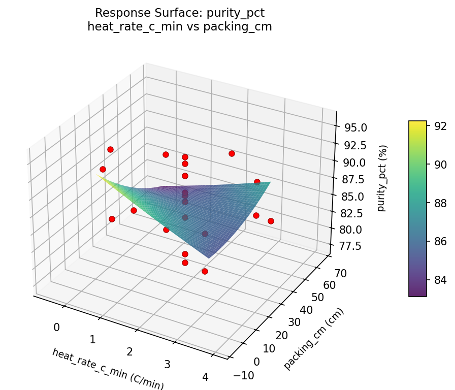
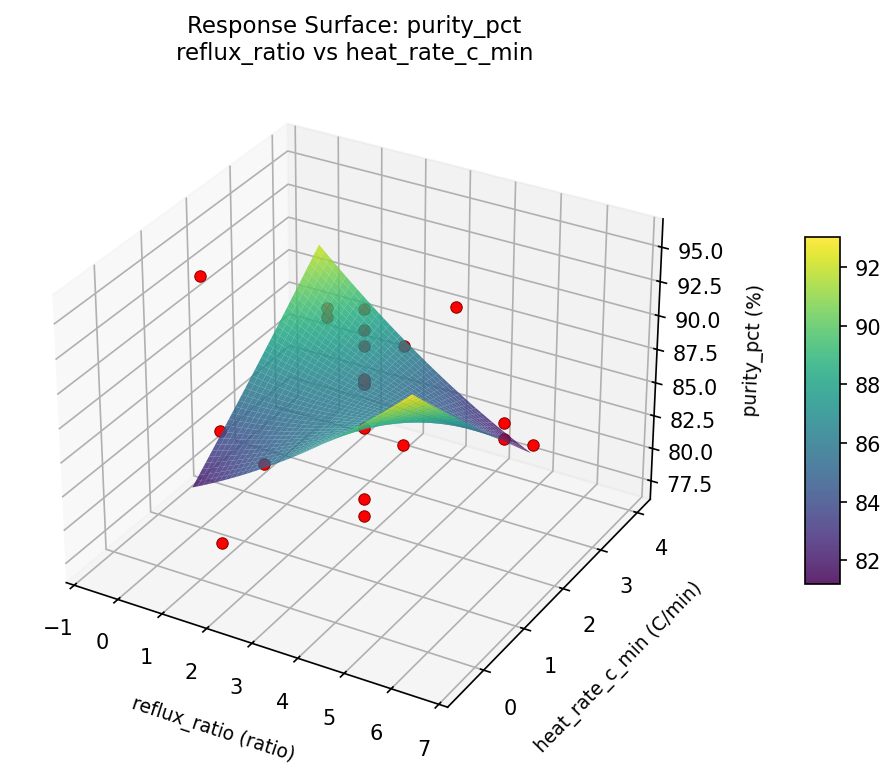
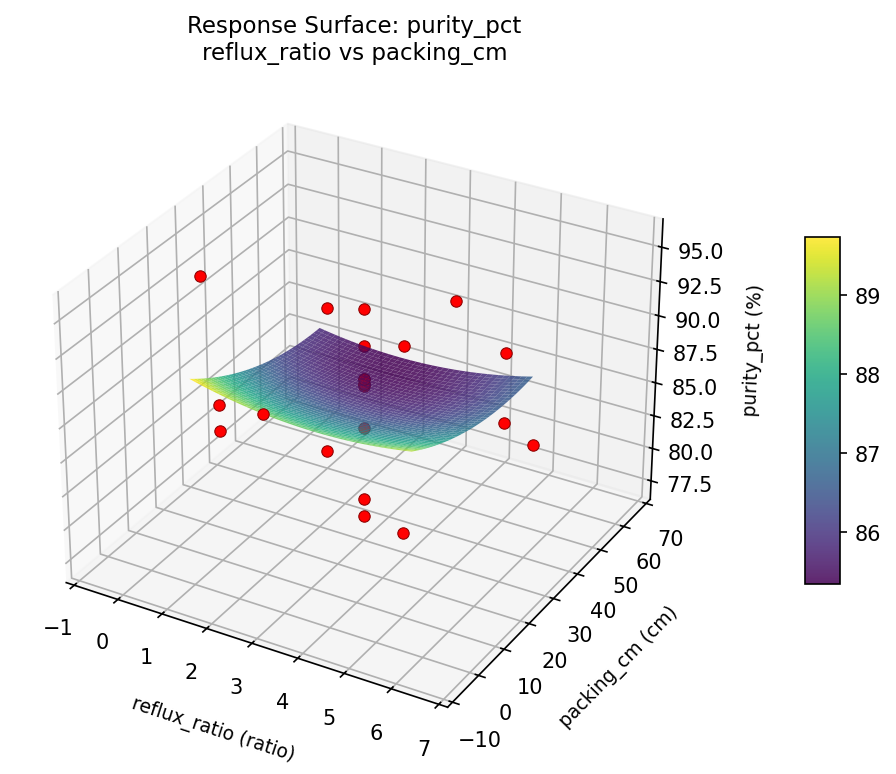
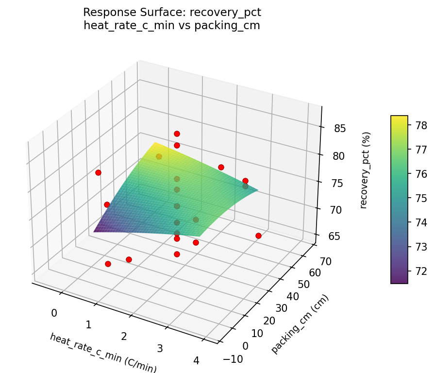
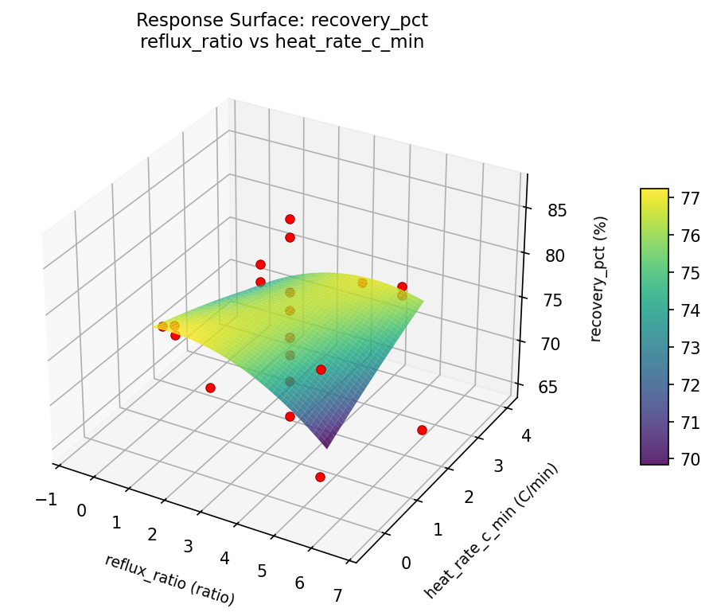
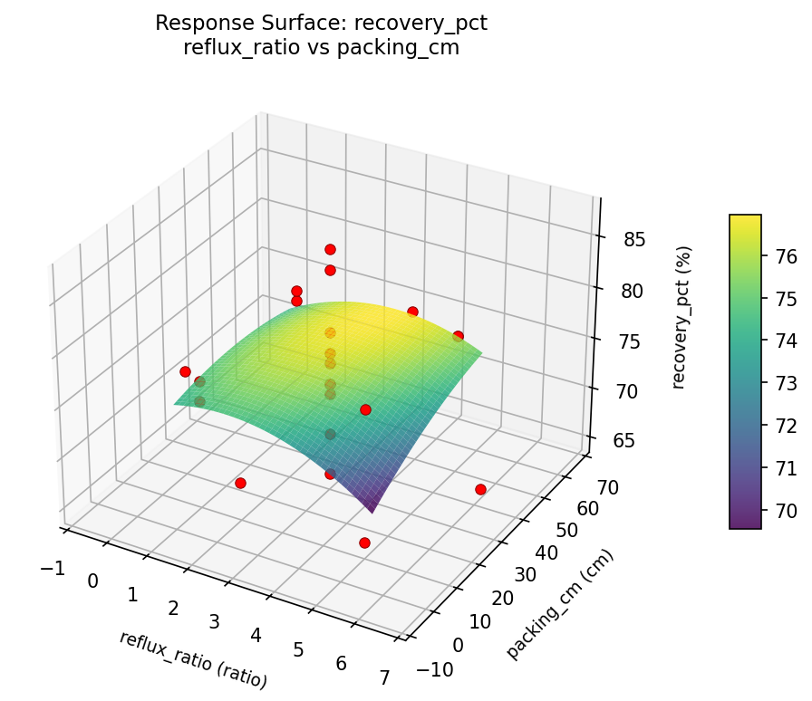

Summary
This experiment investigates lab distillation purity. Central composite design to maximize distillate purity and recovery by tuning reflux ratio, heating rate, and column packing height.
The design varies 3 factors: reflux ratio (ratio), ranging from 1 to 5, heat rate c min (C/min), ranging from 0.5 to 3.0, and packing cm (cm), ranging from 10 to 50. The goal is to optimize 2 responses: purity pct (%) (maximize) and recovery pct (%) (maximize). Fixed conditions held constant across all runs include mixture = ethanol_water, column diam = 25mm.
A Central Composite Design (CCD) was selected to fit a full quadratic response surface model, including curvature and interaction effects. With 3 factors this produces 22 runs including center points and axial (star) points that extend beyond the factorial range.
Quadratic response surface models were fitted to capture potential curvature and factor interactions. The RSM contour plots below visualize how pairs of factors jointly affect each response.
Key Findings
For purity pct, the most influential factors were reflux ratio (43.0%), packing cm (41.5%), heat rate c min (15.5%). The best observed value was 95.7 (at reflux ratio = 1, heat rate c min = 0.5, packing cm = 10).
For recovery pct, the most influential factors were reflux ratio (49.2%), packing cm (30.2%), heat rate c min (20.6%). The best observed value was 87.0 (at reflux ratio = 3, heat rate c min = 1.75, packing cm = 30).
Recommended Next Steps
- Run confirmation experiments at the predicted optimal settings to validate the model.
- Consider whether any fixed factors should be varied in a future study.
Experimental Setup
Factors
| Factor | Low | High | Unit |
|---|
reflux_ratio | 1 | 5 | ratio |
heat_rate_c_min | 0.5 | 3.0 | C/min |
packing_cm | 10 | 50 | cm |
Fixed: mixture = ethanol_water, column_diam = 25mm
Responses
| Response | Direction | Unit |
|---|
purity_pct | ↑ maximize | % |
recovery_pct | ↑ maximize | % |
Configuration
{
"metadata": {
"name": "Lab Distillation Purity",
"description": "Central composite design to maximize distillate purity and recovery by tuning reflux ratio, heating rate, and column packing height"
},
"factors": [
{
"name": "reflux_ratio",
"levels": [
"1",
"5"
],
"type": "continuous",
"unit": "ratio"
},
{
"name": "heat_rate_c_min",
"levels": [
"0.5",
"3.0"
],
"type": "continuous",
"unit": "C/min"
},
{
"name": "packing_cm",
"levels": [
"10",
"50"
],
"type": "continuous",
"unit": "cm"
}
],
"fixed_factors": {
"mixture": "ethanol_water",
"column_diam": "25mm"
},
"responses": [
{
"name": "purity_pct",
"optimize": "maximize",
"unit": "%"
},
{
"name": "recovery_pct",
"optimize": "maximize",
"unit": "%"
}
],
"settings": {
"operation": "central_composite",
"test_script": "use_cases/192_distillation_purity/sim.sh"
}
}
Experimental Matrix
The Central Composite Design produces 22 runs. Each row is one experiment with specific factor settings.
| Run | reflux_ratio | heat_rate_c_min | packing_cm |
|---|
| 1 | 3 | 1.75 | 30 |
| 2 | 5 | 0.5 | 50 |
| 3 | 1 | 3 | 10 |
| 4 | 3 | 4.03218 | 30 |
| 5 | 3 | 1.75 | 30 |
| 6 | -0.651484 | 1.75 | 30 |
| 7 | 3 | 1.75 | -6.51484 |
| 8 | 3 | 1.75 | 30 |
| 9 | 5 | 3 | 10 |
| 10 | 6.65148 | 1.75 | 30 |
| 11 | 3 | 1.75 | 30 |
| 12 | 3 | -0.532177 | 30 |
| 13 | 3 | 1.75 | 30 |
| 14 | 1 | 0.5 | 50 |
| 15 | 3 | 1.75 | 30 |
| 16 | 5 | 0.5 | 10 |
| 17 | 3 | 1.75 | 66.5148 |
| 18 | 5 | 3 | 50 |
| 19 | 3 | 1.75 | 30 |
| 20 | 1 | 0.5 | 10 |
| 21 | 1 | 3 | 50 |
| 22 | 3 | 1.75 | 30 |
Step-by-Step Workflow
1
Preview the design
$ python doe.py info --config use_cases/192_distillation_purity/config.json
2
Generate the runner script
$ python doe.py generate --config use_cases/192_distillation_purity/config.json \
--output use_cases/192_distillation_purity/results/run.sh --seed 42
3
Execute the experiments
$ bash use_cases/192_distillation_purity/results/run.sh
4
Analyze results
$ python doe.py analyze --config use_cases/192_distillation_purity/config.json
5
Get optimization recommendations
$ python doe.py optimize --config use_cases/192_distillation_purity/config.json
6
Generate the HTML report
$ python doe.py report --config use_cases/192_distillation_purity/config.json \
--output use_cases/192_distillation_purity/results/report.html
Real-World Experiment Workflow
ℹ
Physical Laboratory Experiment? Use the Manual Workflow
Laboratory experiments involve real chemical reactions, biological processes, and analytical instruments. Results must be measured from actual samples. The simulation script above is for demonstration. For your real experiments, use record, status, and export-worksheet.
$ python doe.py export-worksheet --config use_cases/192_distillation_purity/config.json \
--format csv --output worksheet.csv
$ python doe.py status --config use_cases/192_distillation_purity/config.json
$ python doe.py record --config use_cases/192_distillation_purity/config.json --run 1
$ python doe.py analyze --config use_cases/192_distillation_purity/config.json --partial
$ python doe.py analyze --config use_cases/192_distillation_purity/config.json
$ python doe.py optimize --config use_cases/192_distillation_purity/config.json
$ python doe.py report --config use_cases/192_distillation_purity/config.json \
--output report.html
✔
Works Without a Test Script
The analysis pipeline doesn't care how results were produced. Record your measurements with record, and the full analysis, optimization, and reporting pipeline works identically. Use --partial to get early insights before all runs are complete.
Features Exercised
| Feature | Value |
|---|
| Design type | central_composite |
| Factor types | continuous (all 3) |
| Arg style | double-dash |
| Responses | 2 (purity_pct ↑, recovery_pct ↑) |
| Total runs | 22 |
Analysis Results
Generated from actual experiment runs using the DOE Helper Tool.
Response: purity_pct
Top factors: reflux_ratio (43.0%), packing_cm (41.5%), heat_rate_c_min (15.5%).
Pareto Chart

Main Effects Plot

Response: recovery_pct
Top factors: reflux_ratio (49.2%), packing_cm (30.2%), heat_rate_c_min (20.6%).
Pareto Chart

Main Effects Plot

Response Surface Plots
3D surfaces fitted with quadratic RSM. Red dots are observed data points.
purity pct heat rate c min vs packing cm

purity pct reflux ratio vs heat rate c min

purity pct reflux ratio vs packing cm

recovery pct heat rate c min vs packing cm

recovery pct reflux ratio vs heat rate c min

recovery pct reflux ratio vs packing cm

Full Analysis Output
RSM surface: rsm_purity_pct_reflux_ratio_vs_heat_rate_c_min.png
RSM surface: rsm_purity_pct_reflux_ratio_vs_packing_cm.png
RSM surface: rsm_purity_pct_heat_rate_c_min_vs_packing_cm.png
RSM surface: rsm_recovery_pct_reflux_ratio_vs_heat_rate_c_min.png
RSM surface: rsm_recovery_pct_reflux_ratio_vs_packing_cm.png
RSM surface: rsm_recovery_pct_heat_rate_c_min_vs_packing_cm.png
=== Main Effects: purity_pct ===
Factor Effect Std Error % Contribution
--------------------------------------------------------------
reflux_ratio 7.5750 1.0077 43.0%
packing_cm 7.3000 1.0077 41.5%
heat_rate_c_min 2.7250 1.0077 15.5%
=== Summary Statistics: purity_pct ===
reflux_ratio:
Level N Mean Std Min Max
------------------------------------------------------------
-0.651484 1 92.4000 0.0000 92.4000 92.4000
1 4 84.8250 5.0704 77.4000 88.4000
3 12 87.1000 4.5810 77.9000 93.3000
5 4 87.5500 6.1022 82.3000 95.7000
6.65148 1 86.9000 0.0000 86.9000 86.9000
heat_rate_c_min:
Level N Mean Std Min Max
------------------------------------------------------------
-0.532177 1 88.2000 0.0000 88.2000 88.2000
0.5 4 86.9000 7.5750 77.4000 95.7000
1.75 12 87.3833 4.8283 77.9000 93.3000
3 4 85.4750 3.0270 82.3000 88.4000
4.03218 1 87.7000 0.0000 87.7000 87.7000
packing_cm:
Level N Mean Std Min Max
------------------------------------------------------------
-6.51484 1 91.8000 0.0000 91.8000 91.8000
10 4 87.8750 5.6759 82.3000 95.7000
30 12 87.0500 4.6304 77.9000 93.3000
50 4 84.5000 5.2997 77.4000 88.7000
66.5148 1 88.1000 0.0000 88.1000 88.1000
=== Main Effects: recovery_pct ===
Factor Effect Std Error % Contribution
--------------------------------------------------------------
reflux_ratio 7.7500 1.1437 49.2%
packing_cm 4.7500 1.1437 30.2%
heat_rate_c_min 3.2500 1.1437 20.6%
=== Summary Statistics: recovery_pct ===
reflux_ratio:
Level N Mean Std Min Max
------------------------------------------------------------
-0.651484 1 71.0000 0.0000 71.0000 71.0000
1 4 75.7500 1.2583 74.0000 77.0000
3 12 75.4167 6.1416 65.0000 87.0000
5 4 74.2500 6.1847 65.0000 78.0000
6.65148 1 68.0000 0.0000 68.0000 68.0000
heat_rate_c_min:
Level N Mean Std Min Max
------------------------------------------------------------
-0.532177 1 76.0000 0.0000 76.0000 76.0000
0.5 4 73.7500 5.8523 65.0000 77.0000
1.75 12 74.5833 6.5707 65.0000 87.0000
3 4 76.2500 1.7078 74.0000 78.0000
4.03218 1 73.0000 0.0000 73.0000 73.0000
packing_cm:
Level N Mean Std Min Max
------------------------------------------------------------
-6.51484 1 72.0000 0.0000 72.0000 72.0000
10 4 73.2500 5.7373 65.0000 78.0000
30 12 74.8333 6.5482 65.0000 87.0000
50 4 76.7500 0.5000 76.0000 77.0000
66.5148 1 74.0000 0.0000 74.0000 74.0000
Pareto chart (purity_pct): use_cases/192_distillation_purity/results/analysis/pareto_purity_pct.png
Pareto chart (recovery_pct): use_cases/192_distillation_purity/results/analysis/pareto_recovery_pct.png
Main effects (purity_pct): use_cases/192_distillation_purity/results/analysis/main_effects_purity_pct.png
Main effects (recovery_pct): use_cases/192_distillation_purity/results/analysis/main_effects_recovery_pct.png
Optimization Recommendations
=== Optimization: purity_pct ===
Direction: maximize
Best observed run: #2
reflux_ratio = 1
heat_rate_c_min = 0.5
packing_cm = 10
Value: 95.7
RSM Model (linear, R² = 0.1241, Adj R² = -0.0219):
Coefficients:
intercept +87.0000
reflux_ratio +0.2991
heat_rate_c_min -1.0189
packing_cm -1.6858
RSM Model (quadratic, R² = 0.4126, Adj R² = -0.0279):
Coefficients:
intercept +86.3539
reflux_ratio +0.2991
heat_rate_c_min -1.0189
packing_cm -1.6858
reflux_ratio*heat_rate_c_min +3.9625
reflux_ratio*packing_cm +0.4125
heat_rate_c_min*packing_cm +0.5375
reflux_ratio^2 +0.3580
heat_rate_c_min^2 +0.1780
packing_cm^2 +0.4330
Curvature analysis:
packing_cm coef=+0.4330 convex (has a minimum)
reflux_ratio coef=+0.3580 convex (has a minimum)
heat_rate_c_min coef=+0.1780 convex (has a minimum)
Notable interactions:
reflux_ratio*heat_rate_c_min coef=+3.9625 (synergistic)
heat_rate_c_min*packing_cm coef=+0.5375 (synergistic)
reflux_ratio*packing_cm coef=+0.4125 (synergistic)
Predicted optimum (from linear model):
reflux_ratio = 3
heat_rate_c_min = 1.75
packing_cm = -6.51484
Predicted value: 90.0779
Model quality: Weak fit — consider adding center points or using a different design.
Factor importance:
1. packing_cm (effect: 5.7, contribution: 52.4%)
2. heat_rate_c_min (effect: 3.3, contribution: 30.4%)
3. reflux_ratio (effect: 1.9, contribution: 17.2%)
=== Optimization: recovery_pct ===
Direction: maximize
Best observed run: #6
reflux_ratio = 3
heat_rate_c_min = 1.75
packing_cm = 30
Value: 87.0
RSM Model (linear, R² = 0.0471, Adj R² = -0.1117):
Coefficients:
intercept +74.7273
reflux_ratio -0.7025
heat_rate_c_min +0.1395
packing_cm +1.1947
RSM Model (quadratic, R² = 0.3099, Adj R² = -0.2077):
Coefficients:
intercept +74.8194
reflux_ratio -0.7025
heat_rate_c_min +0.1395
packing_cm +1.1947
reflux_ratio*heat_rate_c_min -3.6250
reflux_ratio*packing_cm -1.8750
heat_rate_c_min*packing_cm -0.3750
reflux_ratio^2 +0.3039
heat_rate_c_min^2 -0.8961
packing_cm^2 +0.4539
Curvature analysis:
heat_rate_c_min coef=-0.8961 concave (has a maximum)
packing_cm coef=+0.4539 convex (has a minimum)
reflux_ratio coef=+0.3039 convex (has a minimum)
Notable interactions:
reflux_ratio*heat_rate_c_min coef=-3.6250 (antagonistic)
reflux_ratio*packing_cm coef=-1.8750 (antagonistic)
heat_rate_c_min*packing_cm coef=-0.3750 (antagonistic)
Predicted optimum (from linear model):
reflux_ratio = 3
heat_rate_c_min = 1.75
packing_cm = 66.5148
Predicted value: 76.9085
Model quality: Weak fit — consider adding center points or using a different design.
Factor importance:
1. heat_rate_c_min (effect: 9.0, contribution: 48.0%)
2. packing_cm (effect: 5.8, contribution: 30.7%)
3. reflux_ratio (effect: 4.0, contribution: 21.3%)